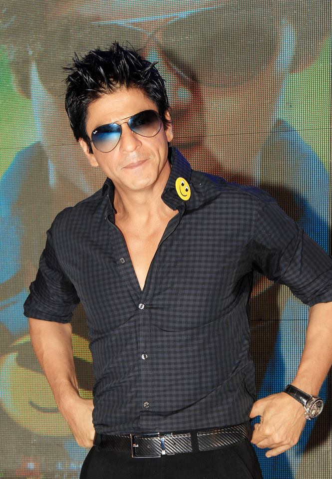

Cut To A Guy Who Is So Obsessed With His Girlfriend That He Came To
Mumbai And Searched For Her With Only The Information That She Loved
Swimming. He Sold His Pentax Camera For Rs 10,000, As He Combed Beaches
With Hope And Prayer That He Would Locate Her, Sleeping On The Park
Benches, And Cleaning And Bathing In The Hotel Bathrooms. His Friends
Lost Hope And Purchased Tickets With The Balance Remaining Money While
He For The Last Time Combed The North Mumbai Beaches And Luckily Found
Her. Sitting Forlorn At The Marine Drive In Mumbai, He Promised That One
Day He Would Rule The City Of Mumbai. In His One Of His First Castings
For A Movie Produced And Directed By Arundhati Roy, He Was Given A Role
Of An Extra And He Vowed That He Would One Day Win An Oscar Playing A
Gay Man. He Came To Mumbai To Act In A Serial And Got Stranded At The
Mumbai Airport In The Middle Of The Night As The Person Who Was Supposed
To Pick Him Up Overslept, He Cried In The Telephone Booth Thinking That
Probably It Was A Hoax While Searching For Some Coins. He Was
Recommended For The Role Of Abhimanyu Rai (Fauji)By The Son In-Law Of
The Producer Who Was Showing Some Flats To His Mother. The Original
Choice Of The Main Lead Was The Producer's Son Who Was Also The Camera
Man In The Serial.
He Got The Role As There Was A
Logistic Problem Of Handling The Camera And The Role Simultaneously By
The Producer's Son. His Role Became Bigger And Bigger As The Other Co-
Stars Threw Tantrums While He Worked Hard To Get The Nuances Right As An
Army Officer. This Choice Of Being Always The Second Or The Third Choice
Continued With The Movie Baazigar Where The Other Established Starts
Like Aamir, Anil Kapoor Were The First Choice, But They Refused To Touch
The Movie Where The Main Character Kills Without Any Compunctions And
"Is A Murderer In The Movie" The Same Continued With Darr Where He Was
Selected With Great Reluctance As No Established Actor Wanted To Be Seen
Being Beaten To Pulp At The End In The Movie. Juhi Chawla Shrieked As
She Was Persuaded By The Director/Producer That This Actor Was At That
Time Going To Be Another Aamir Khan In Making When She Met Him For The
First Time During The Shooting Of Darr. She Could Not Get Over The Fact
That He Was So Dark With Wild Unruly Hair In Comparison To Aamir And
Salman Khan Who Were Recently Launched During The Same Time Both The
Movies Were Superhits Blockbuster And He Went On To Bag The Filmfare
Best Actor Award For Baazigar . He Went To Meet Abbas- Mastan(Directors
Of Bazigar)At 2 O' Clock After The Ceremony At Their Residence In Bhendi
Bazaar Chawl And Touched Their Feet. He Initially Refused To Do Dilwale
Dulhania Le Jayenge With Aditya Chopra As He Thought Of It As A Romantic
Clich?. He Only Agreed To Do It As He Liked The Last Scene Where The
Father Lets Go Of The Heroine's Hand . He Never Wanted To Be The
Bollywood Star But A Television Personality Like Oprah Winfrey And
Refused Movies In The Beginning. His Fianc? And Later His Wife Had
Strong Reservations Against Him Joining The Bollywood .
He Grandly Declared That If He
Had To Choose Between His Flourishing Career In The Movie Or His Wife.
He Would Always Choose His Wife Over Everything Else. He Initially
Refused To Do The Movie Chamatkar When The Producer Insisted That He
Should Hide His Marriage As Was The Norm At That Time. He Also Refused
To Tell A Lie To His In Laws Who Were Dead Against His Marriage To Their
Hindu Daughter. His Fianc? And Later Wife Insisted That He Tell His In
-Laws That He Has Rs. 6 Lacs In His Bank When He Only Had Rs 28000/- In
His Bank Account. He Refused To Do So And Grandly Proclaimed During That
Time That Dilip Kumar Had Become Old, Amitabh Bachchan Had Retired And
It Was His Time Now To Crowned As The King When He Left Delhi For Mumbai
To Start His Career In Bollywood. Gradually, He Became The Superstar
Giving One Hit After The Another. He Has Always Charged Lesser Than His
Fellow Actors While Doing The Films As He Feels That All The Name And
Fame He Has Is Due To The Film Industry And Makes Up With The Brand
Endorsements. He Claims That He Can Do Anything -Dance, Shows ... For
Money Except Films. Films He Does Only For Love. He Also Went Into
Production And Promised To Make Different Kind Of Movies - His First
Movie Phir Bhi Dil Hai Hindustani Made With Blood, And Tears Flopped And
The Critics, Media Were Savage In Their Attacks. He Also Faced Scary
Days When The Mafia Started Targeting Film Wallahs. The Mafia Used To
Call Him And Threaten And Chat With Him. With His Common Sense And Smart
Wit He Managed To Escape Them. He Has Always Maintained A Tight Balance
Between Handling The Mafia And As A Law Abiding Citizen. This Is The
Roller Coaster Life Journey Of Todays Superstar Shah Rukh Khan.
Need Less To Say Picture Abhi Baki Hai???